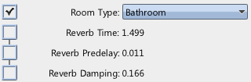
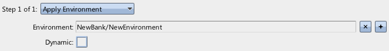
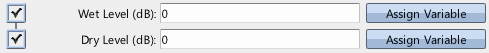

|
Environments and Reverb |
| Navigation |
Reverb is a common effect in games, and in Miles Studio they are set up in Environments. However, the environment only sets up the reverb itself, each sound has to declare whether it is affected by that reverb, and by how much.
Requisite Terminology
New Terminology
Steps

For simplicity, this example will use the EAX standard "Bathroom" reverb setup.

In order for Miles to use an environment, it has to be told which environment to use. The Apply Environment event step accomplishes that.

By default, a sound is not affected by reverb. In order to change this, the Wet Level for the sound must be brought above -96 dB.
The event now has two actions - the first will apply the environment that contains the reverb, and the second will start the sound with the preset that ensures the sound will be affected by the reverb.
This is clearly a basic integration of reverb, but you can easily extrapolate from here. For instance, the reverb parameters could be bound to variables and updated based on level geometry (don't forget to mark the environment Dynamic!), or the wet level on the Presets could be controlled. Feel free to bind such parameters to variables and play around with them on the sliders!
 Dynamic Presets and Sliders Dynamic Presets and Sliders |
 Sound Designer User Guide Sound Designer User Guide |
 Limited Sound Counts Limited Sound Counts |

|
Miles Sound System 9.3b
E-mail miles3@radgametools.com for technical support. Copyright © 1991-2012 by RAD Game Tools, Inc. All Rights Reserved. |

|